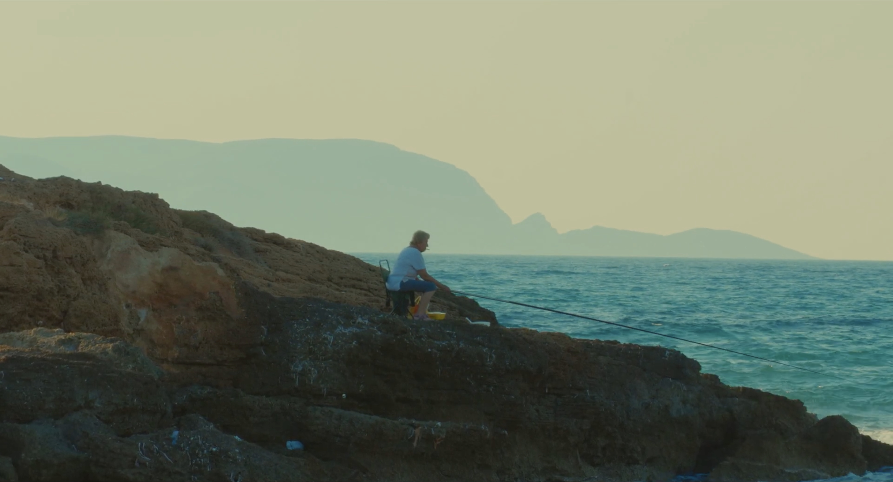

A MINUTE OF CRETE
Op Kreta draaide ik puur op gevoel: geen shotlist en geen script. Ik wilde genieten van mijn vakantie en tegelijk mooie shots vastleggen. Pas op de tijdlijn begon ik met puzzelen en viel alles op zijn plek.
KIJK HIER DE HELE VIDEO →